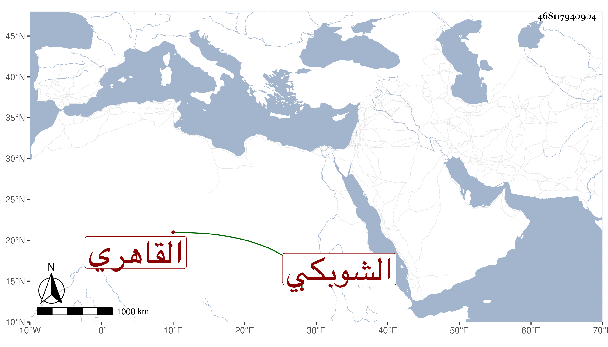

0902Sakhawi.DawLamic.ITO20230111-ara1.EIS1600.468117940904
Biography ID: 468117940904
652
محمد بن سليمان بن داود بدر الدين بن بدر الدين بن علم الدين الشوبكي الأصل القاهري ابن أخي الزين عبد الرحمن الماضي وأبوه أيضا ويعرف كسلفه بابن الكويز . نشأ في الرياسة وحفظ القرآن وتدرب في المباشرة بأقربائه وبرع فيها وفي الكتابة، وباشر نظر الدخيرة مدة ثم معلمية الصناع وجمع بينهما ثم أضيف إليه الخاص ونظر القرافتين وانفصل عنه بزكريا وأمره في المباشرات أخف من عمه ولذا أثنى على حشمته وحسن عشرته في الجملة . مات بعد تعلله مدة وأصيب إما بآكلة أو بقرحة جمرة أو نحو ذلك لسبب أزعجه في ليلة الخميس ثاني عشري شعبان سنة خمس وثمانين عن ثلاث وستين سنة ودفن من الغد بتربتهم .
